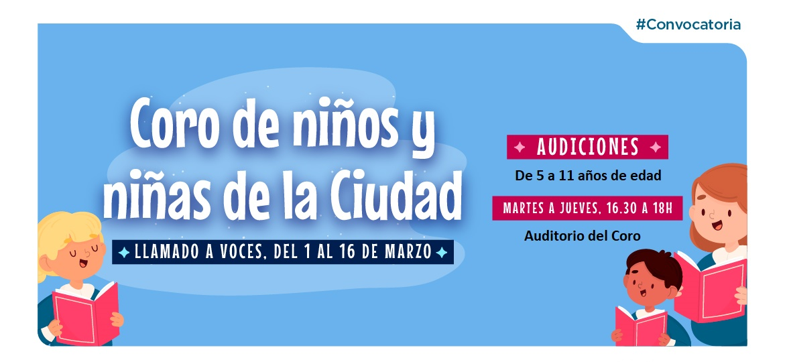

Podés audicionar para el Coros de Niños si tenés entre 5 y 11 años y vivis dentro de la ciudad. Ensayamos todos los martes y jueves a las 18:00 hs en el auditorio de la escuela coral. Las audiciones se realizan a las 16 hs en el mismo lugar!!
Los cupos son limitados, Te esperamos!
IMPORTANTE: Ir acompañado de un adulto para la toma de datos del niño.
